Describes GitHub Next's two current bets: Agentic Workflows (markdown-defined background automations with deterministic, non-prompted guardrails) and Ace (a multiplayer chat + shared plan-doc interface for working with agents alongside t...
Agentic Workflows compile a markdown prompt into YAML front matter that deterministically fixes permissions, network destinations, and safe outputs, since prompting alone isn't an enforceable guardrail. GitHub cites Home Assistant's issue-triager as a case this now makes possible (ours).
“my personal understanding was never sufficient for shipping code inside a team, right? Our understanding at an us level can only happen at the end of the process.”
said at 03:07“you're effectively letting the fox loose in the henhouse. It's not actually a guard rail.”
said at 07:42“Never trust agents with secrets. If an agent can know a secret, that secret, you need to treat it as if it's already been compromised.”
said at 11:51“what I really want is a kind of super Dependabot that's always there, automatically looking in the background at my dependencies and figuring out how to upgrade me, including the code changes, the breaking changes”
said at 05:10“closes the issue if it's not their issue, right? That's something that was not possible before AI, not possible with heuristics, uh but is possible now.”
said at 12:21“we actually believe that this is going to be a bigger category than interactive AI because automations that run in the background while you sleep, that's the ballgame”
said at 12:52“What this is good for is surfacing all the facts that are not in code. Anything that's in code, any fact that's in code, the agents can figure out by reading the code.”
said at 13:52“it's only about 5% of the job. Like, this was a longitudinal study conducted on like 100 developers over thousands of hours.”
said at 19:40(ours) The Home Assistant example is the clearest evidence claim in the talk since it names a specific third-party project and behavior; the 5%-typing statistic is presented as a longitudinal study but no source/publication is named, so it's worth treating as an internally-cited figure rather than an independently verifiable one from this transcript alone.
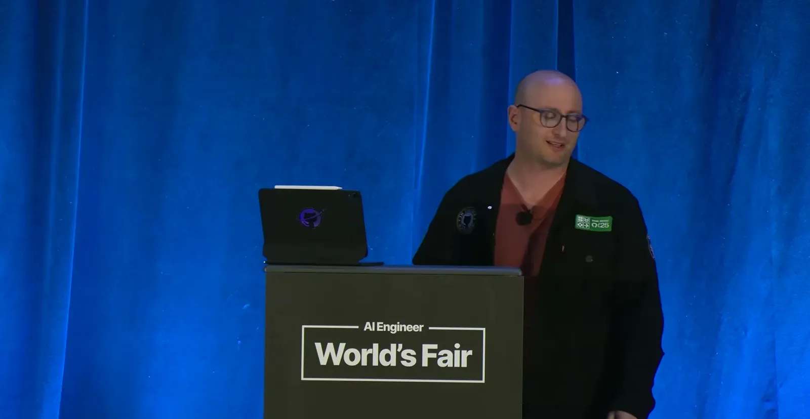
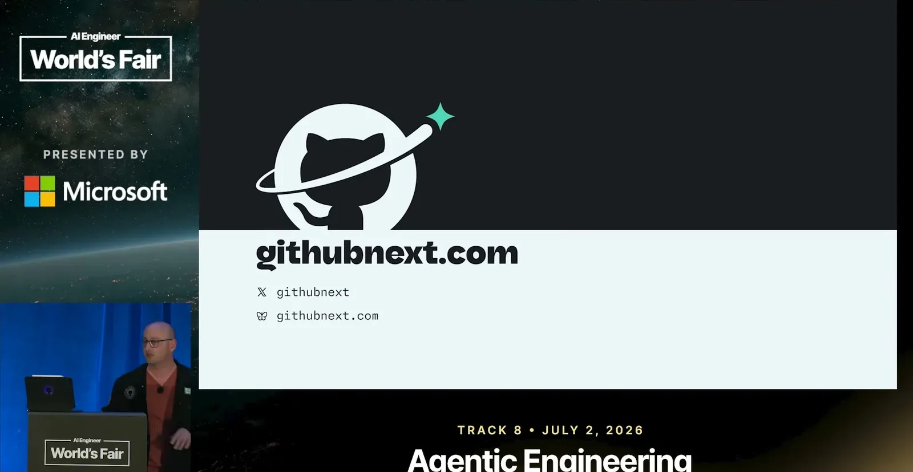
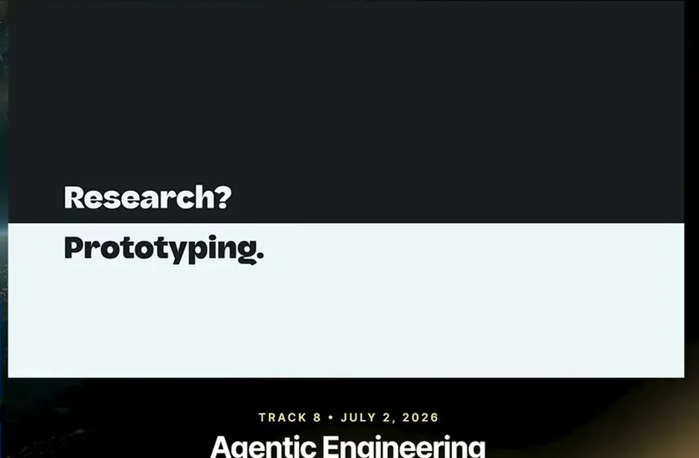
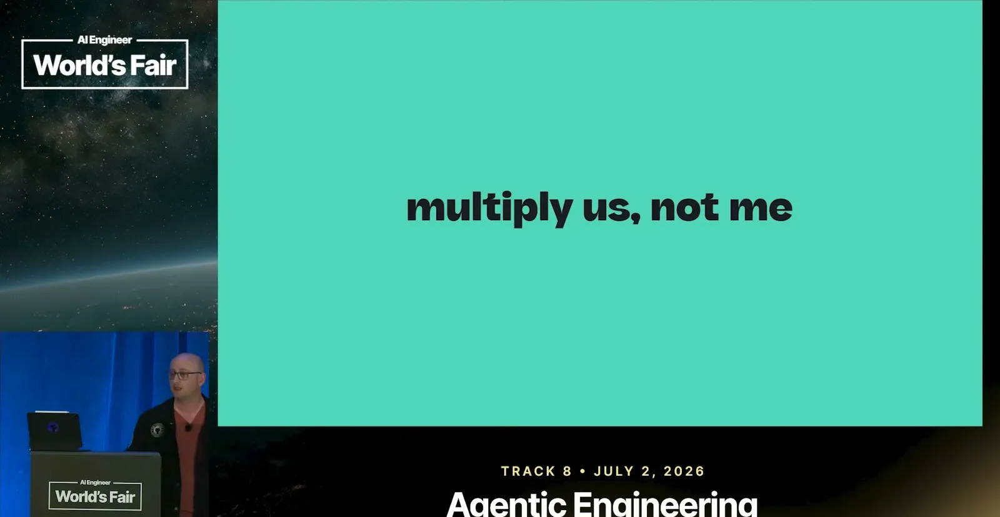
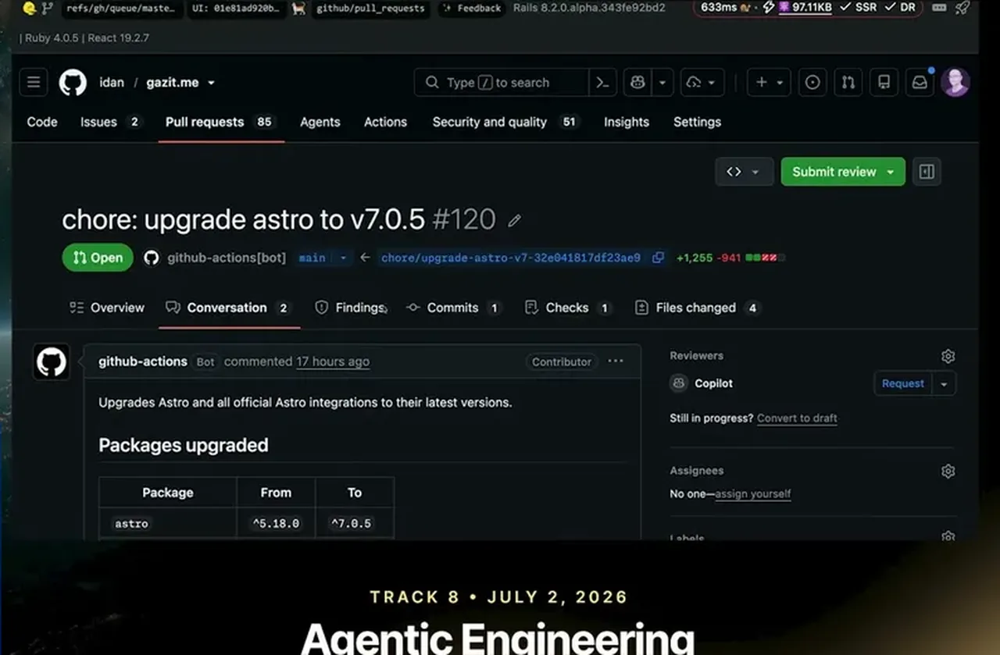
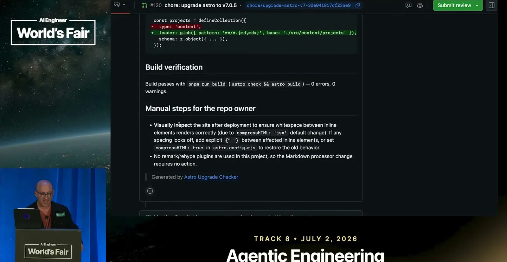
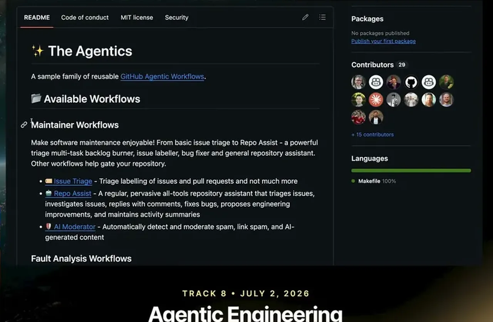
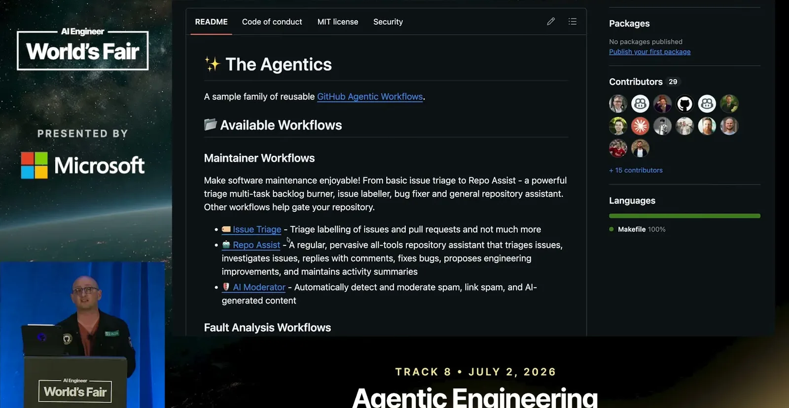
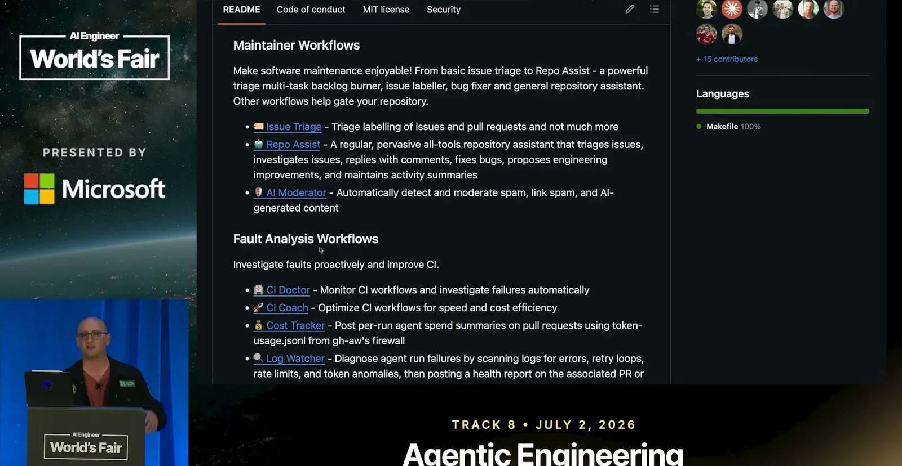
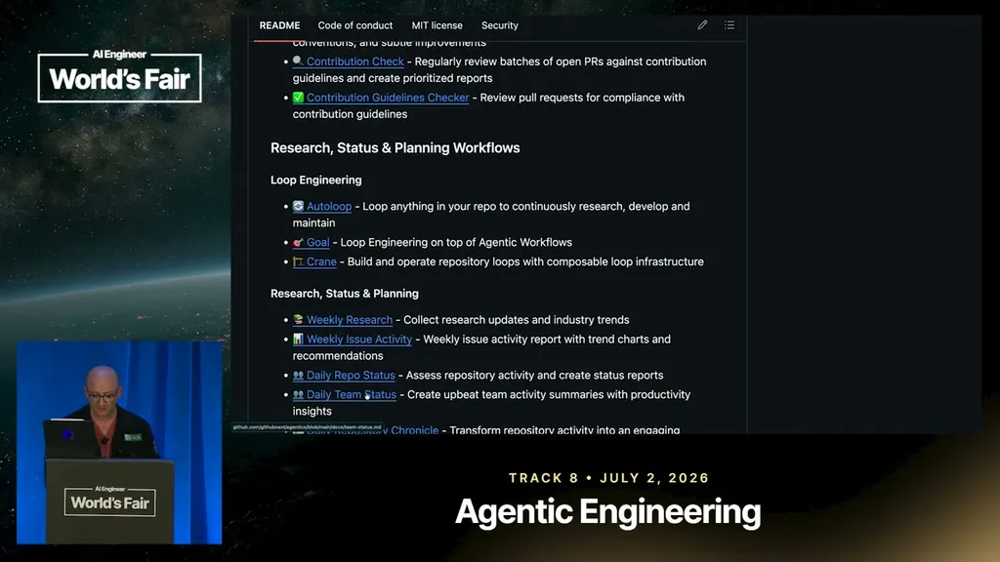
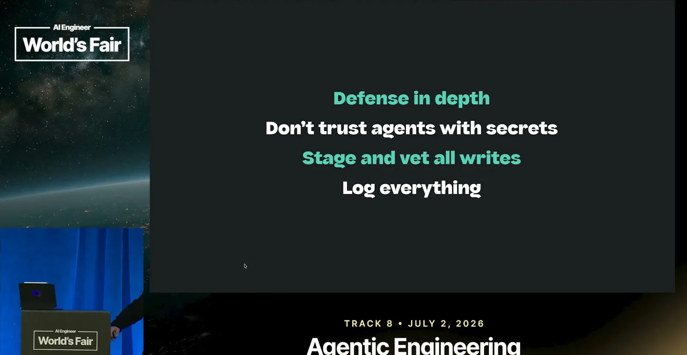
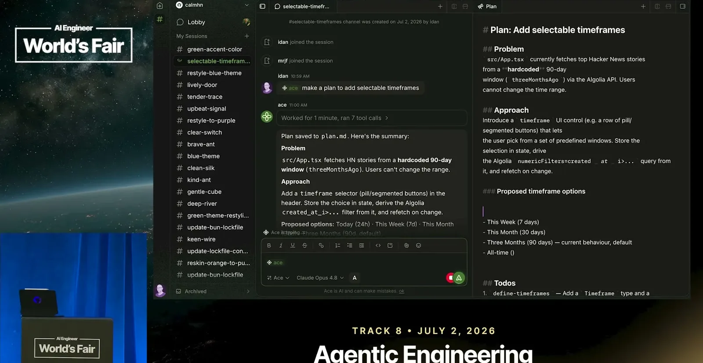
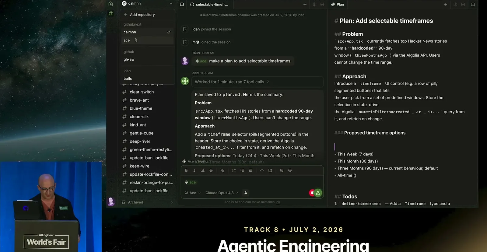
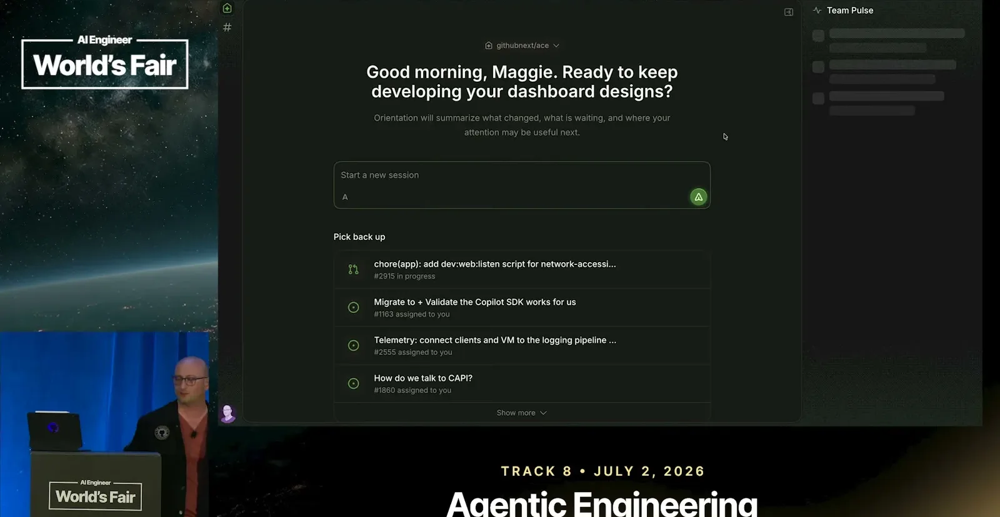
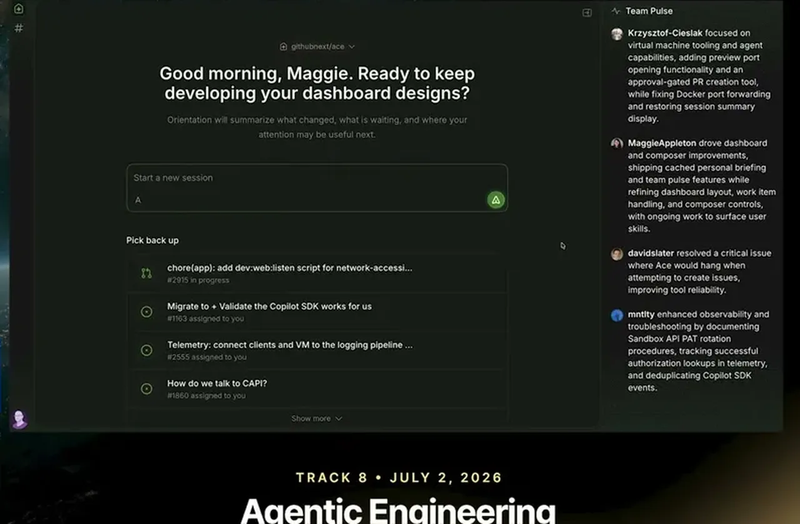
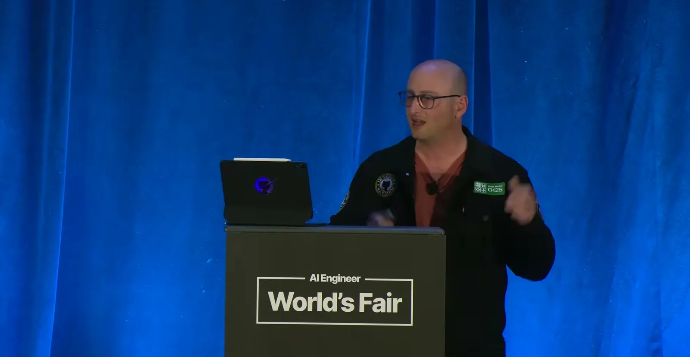
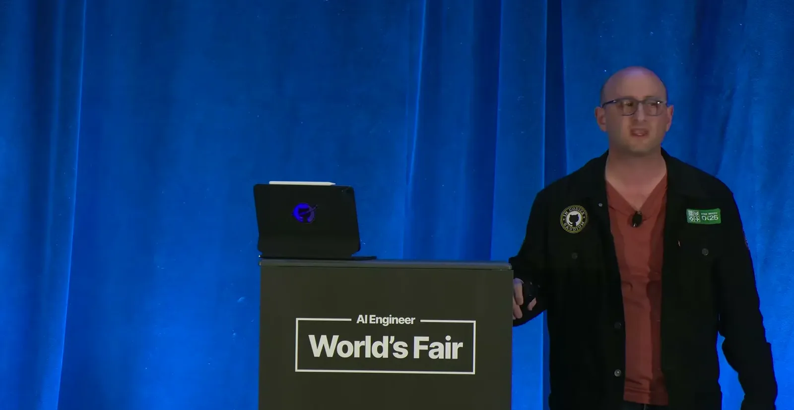
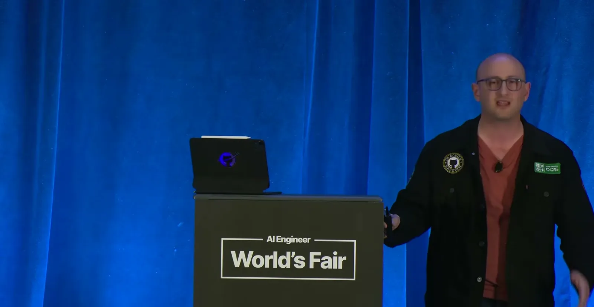
| Stance | Claim | t |
|---|---|---|
| asserts | Personal understanding was never sufficient for shipping code inside a team, and team-level alignment historically could only happen at the end of the process. | 03:07 |
| warns | Guardrails specified only via prompting the agent are not real guardrails, since a prompt injection can override them. | 07:42 |
| warns | If an agent can know a secret, that secret should be treated as already compromised. | 11:51 |
| asserts | Home Assistant's Agentic Workflow closes issues that trace to third-party code, something not possible with heuristics before AI. | 12:21 |
| predicts | Background automation will become a bigger category than interactive AI use. | 12:52 |
| asserts | A longitudinal study of 100 developers over thousands of hours found hands-on-keyboard typing is only about 5% of an engineer's job. | 19:40 |
| asserts | A shared chat surface is useful for surfacing facts not present in code, since agents can already infer anything that is in the code. | 13:52 |
| asserts | The speaker wanted an always-on automation that watches dependencies and makes the needed code changes for upgrades, including breaking changes. | 05:10 |
Machine-readable copy embedded in this page (script#ontology) and in the corpus ontology.